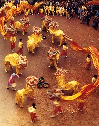
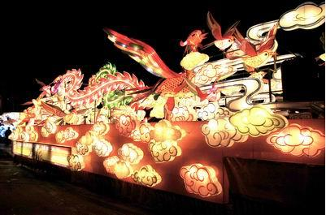
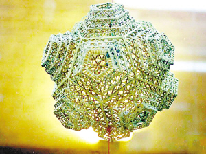
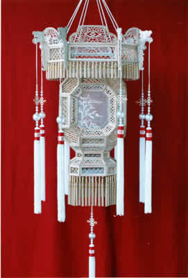
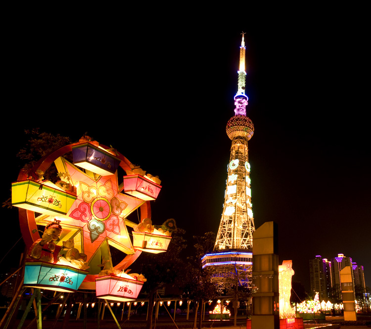
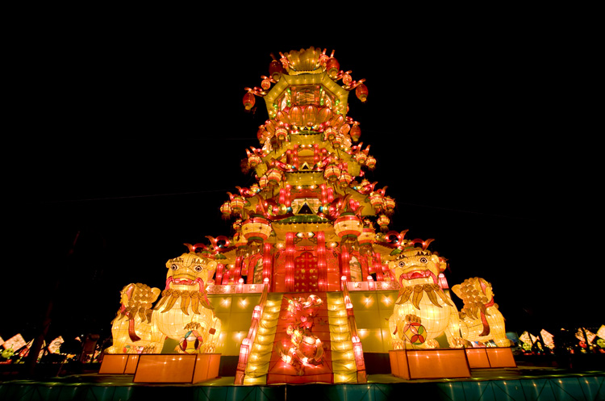

“佛山秋色”是佛山民间传统庆丰收的大型综合性群众性文化艺术活动。2008年被国务院公布为第一批国家级非物质文化遗产扩展项目。
“佛山秋色”质朴纯真、健康清新，是最生动、最丰富的原始艺术、乡土艺术、风俗艺术。相传起源于两晋时期，肇端于儿童舞草龙庆丰收的“孩童耍乐”。明正统十四年（1449年）定名为秋色。“秋色”意为佛山金秋的景色，因在中秋节前后的月明之夜、以大巡游的形式举行，故又称为“秋宵”、“出秋色”、“出秋景”。明代中叶至清，佛山农业、手工业和商业的发展和繁荣，使之成为全国四大名镇之一，“佛山秋色”也发展至鼎盛时期，每于丰年，以行业或各铺里居民自发组织大型的出秋色活动，一铺发起，全镇二十多铺及四乡群众纷纷前来助兴，通过争雄斗胜的巡游演示，形成独具特色的民俗。
“佛山秋色”基本内容分为民间工艺品和文艺表演两大类。民间工艺有扎作、砌作、针作、裱塑、雕批等五种，工艺特点是：原材料随手可得，化腐朽为神奇；制作技艺新奇妙肖，以假乱真。文艺表演包括民间音乐、舞蹈、戏剧、杂技、化装表演等五类。秋色巡游的表现形态又分为灯色、马色、车色、地色、水色、飘色、景色等七色。参演群众数千人，巡游队伍长达数里。
 佛山秋色大彩灯以及1997年香港庆回归庆典展出的280米的巨龙扎作灯色彩龙，分别载入《吉尼斯世界纪录大全》。扎作彩龙远飞澳大利亚、英国等十多个国家，誉佛山为“彩龙的故乡”。
 